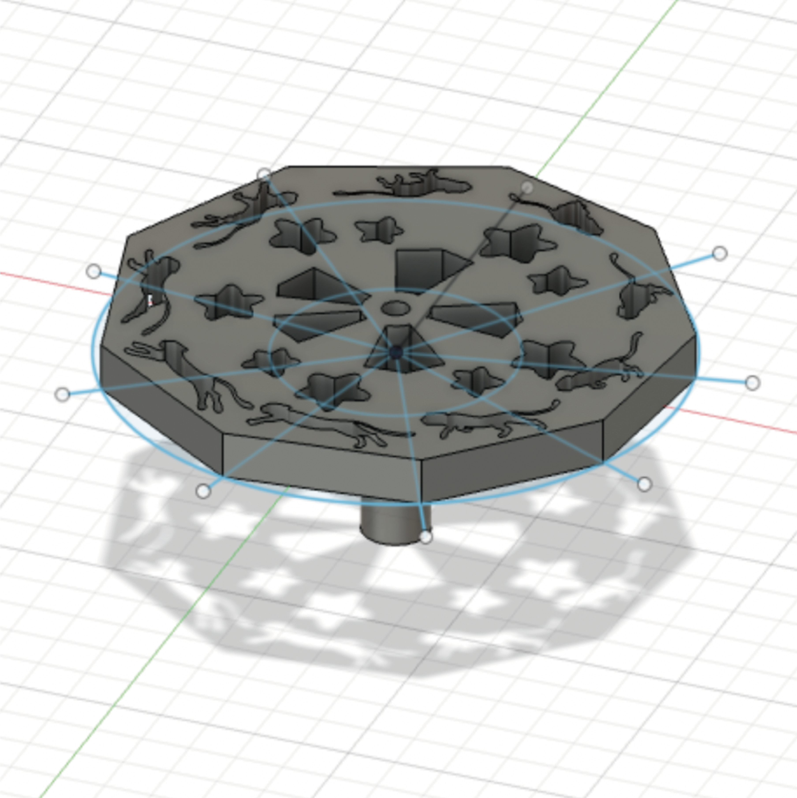
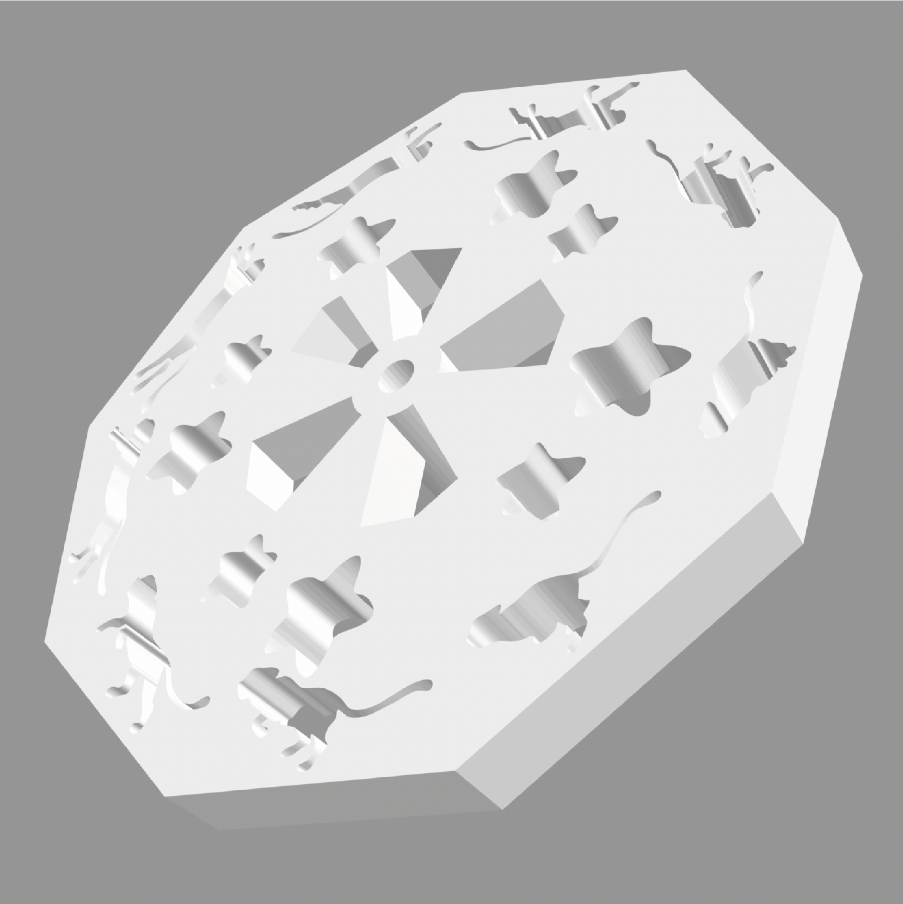
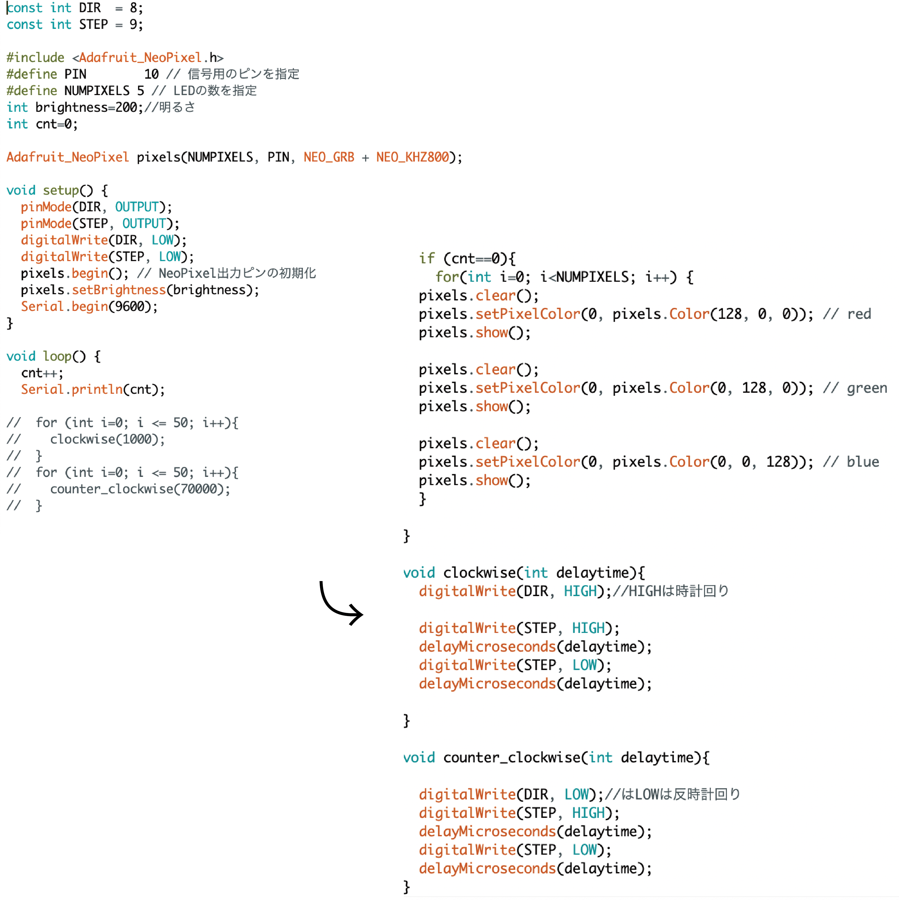

Toys for children
2021
Fusion 360 / 3D printer / Arduino

個人作品「見て楽しむ子供用おもちゃ」
寝ながら見て楽しむまるでベットメリーのようなおもちゃを制作した。この作品の特徴は寝ながら楽しめるという点であり、自動的に回る仕組みになっているため親も子供を寝かせながらリラックスすることができる。下から一箇所に光を当てることで天井に走る猫と星が出てくる仕組みであり、当初ネオピクセルも使おうと予定してたが、光の強さが足りず最終的には一番猫の形が分かり易いスマホのライトを使用している。


使用した様子はこちら→https://youtube.com/shorts/CquVihAbqiE?feature=share